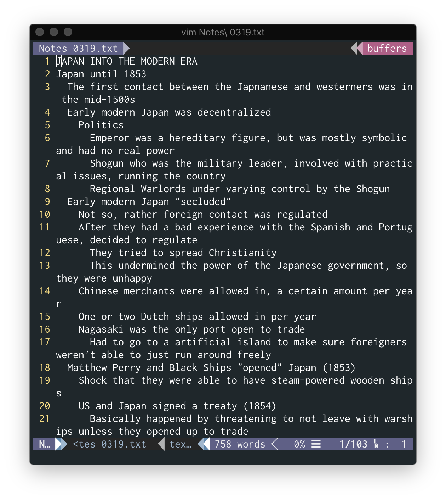
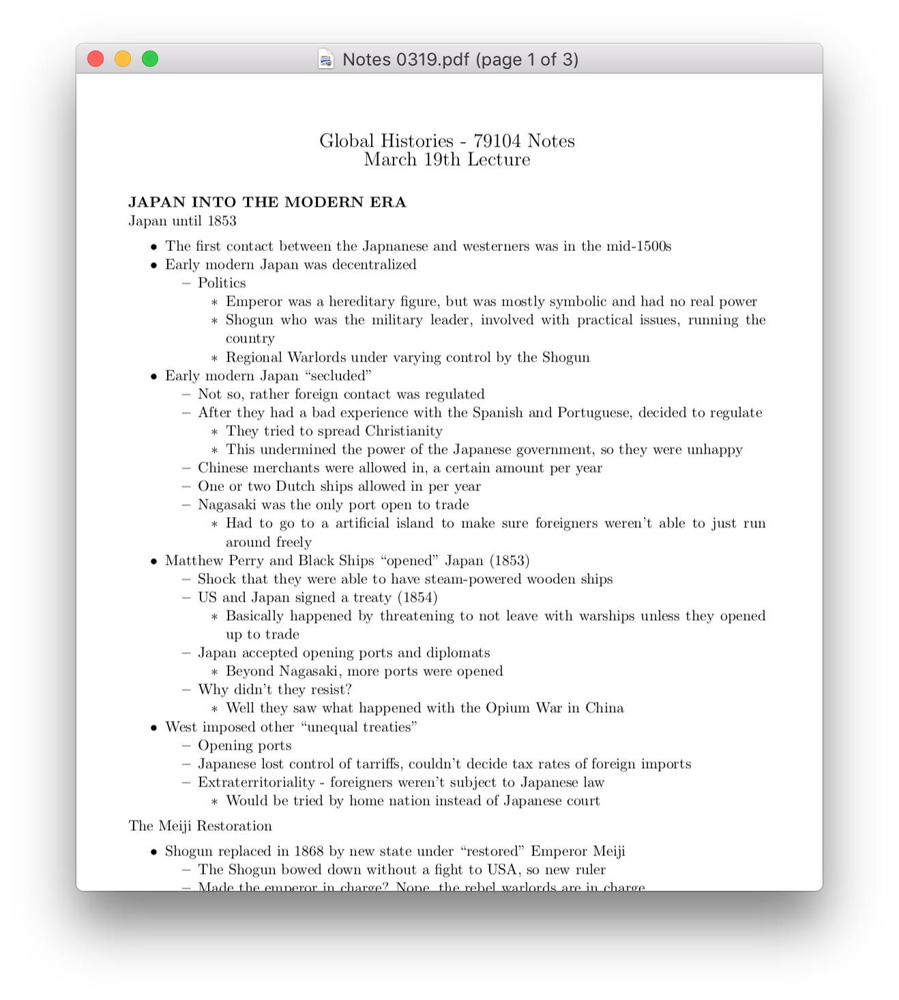

I was sitting in my Global Histories lecture in the Spring semester of my Freshman year, and I was frustrated by writing all my notes in a notebook. I'm awful when it comes to writing things quickly by hand, so slides were passing by before I was able to take all the notes I wanted to take. Given that the class was heavily structured around these lectures and no notes or slides were posted online, I decided to start taking notes on my computer instead.
While I know that studies have shown that people tend to retain information more poorly when they take notes using a computer compared to taking notes via the more classic pen and paper, I had to choose between better retention of the information I was able to write down and missing information or retaining all the information more poorly but having a full set of notes to look back on. Given that I'm writing this post, you can probably assume which choice I made.
While I was more than happy to take notes using my computer since I enjoy typing, I wanted to use Vim in order to practice using the editor and since Microsoft Word has failed me more times than I'd like to remember. While writing notes in a simple .txt file would be easiest, it surely wasn't the prettiest or easiest to read during review. I had been using LaTeX recently so I tried my hand at directly writing LaTeX code during lecture. Evidently, I realized that probably wasn't the best idea and decided to just write everything in text files with tabs to denote where a normal outline would indent.
At this point, I realized I could just write a Python script to transform the notes I was taking into pretty LaTeX code. So that's exactly what I did.
The above text document may be filled with information, but at least I find it very annoying to read, and I probably wouldn't want to be looking through a bunch of text files while reviewing. So instead, after processing the file through txtToLaTeX, it looks much more presentable.
You can find the source code to this project at this GitHub link. If you have improvements to make, feel free to contribute.